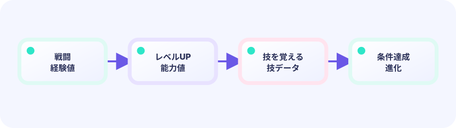

遊んで発見する
完成したミニゲームから、入力と結果の関係を見つけます。
★★★☆☆ / PLAYABLE
経験値からレベルを求め、条件を満たした個体の種族データを切り替えます。
PLAY / INSPECT / BUILD
完成したミニゲームから、入力と結果の関係を見つけます。
マス、状態、探索候補を画面に重ね、処理の途中を見えるようにします。
同じルールをEbitengineのUpdateとDraw、アセットデータで再構成します。
PLAYABLE / WEBASSEMBLY
TRAIN・REST・CHALLENGEをタップ。PCは1〜3またはT/R/C。15ターン以内にレベル4へ育てます。
はじめて読む人へ
経験値追加後、前level<5かつ新level>=5なら一度だけ進化を始めます。 PLAYABLEは『このページで実際に操作できる』という印です。
このページの1本
説明と次のコードを対応させてから、ゲームで変化を確かめよう。
if oldLevel < 5 && level >= 5 { evolve() }
DEEP DIVE / GROWTH CURVE
経験値を(次レベル)²×10の境界と比べます。進化では経験値や現在HPを消さず、基礎能力を持つ種族定義だけを替えます。
次の境界を超える間levelを増やします。
exp >= (level+1)*(level+1)*10種族の基礎値へレベル成長を足します。
attack = baseAttack + level*2レベル4でspeciesIDを変更し、expとhpは保持します。
m.speciesID = evolvedIDTRY IT / XP CURVE
必要 XP はレベルで増えます。足りたら level++ して余りを持ち越し。進化は「レベルが閾値以上」の判定を同じ場所に足します。
曲線を変えたいときは need() だけ触ります。
TRY IT · GO
xp += gained for xp >= need { level++; xp -= need }
—
CURVE FUNCTION
need = level * 10つぎにwhile xp >= need { level++ }必要量を表にしても、関数でもよいです。
IN THE REAL GAME
参照する種族を替えても個体状態は作り直しません。
for exp >= (level+1)*(level+1)*10 { level++ }
if level >= 4 {
m.speciesID = evolvedID // exp, hpは保持
}WHY CURVE?
高レベルほど多くの経験値が必要です。
WHY KEEP?
進化で努力や傷が消えません。
TRY NEXT
レベルと道具の両方を必要にしよう。
FEEDBACK